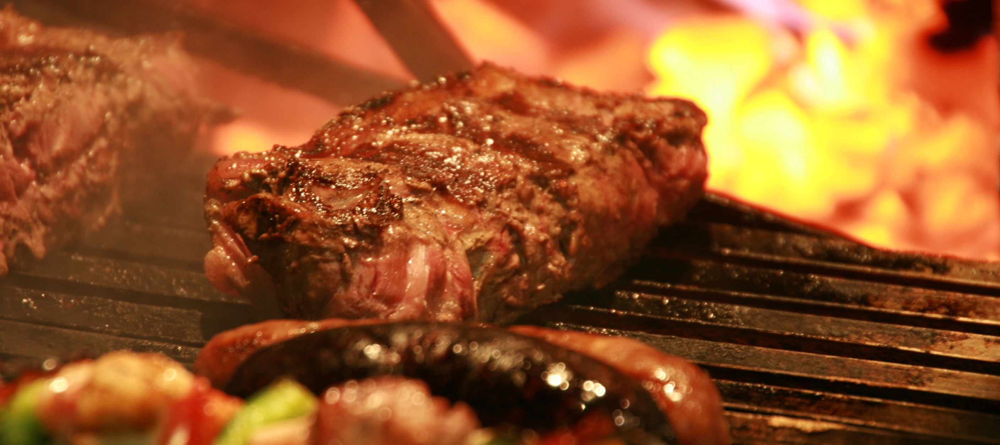

Carne Asada
06 de julio del 2017
Las reuniones familiares y de amigos tienen muchas veces como protagonistas las brasas de la barbacoa. Hoy te vamos a dar los 9 trucos imprescindibles para convertirte en el maestro de las barbacoas para que tus parrilladas y asados sean las mejores del verano.
Lo primero que tienes que tener en cuenta es que, con organización y planificación, tu barbacoa saldrá mejor. No basta comprar carne y carbón y dar por hecho que todo saldrá bien. Es importante una labor previa que simplificará las tareas cuando amigos y familiares esperen hambrientos sus piezas de carne a la brasa.
ariasdelhoyo
Yo tengo un consejo que procuro seguir a rajatabla. Como cuando se va a hacer una barbacoa siempre hay uno que sabe mucho de esto y es muy voluntarioso, yo le dejo hacer. Me separo discretamente, me cojo una cerveza, le acerco lo que me pide, y se acabó. Un saludo a mi amigo Pedro "el voluntarioso".
pakus
Jajaja, gran consejo!!
ariasdelhoyo
Respecto a lo de sazonar la carne al final he de decir una cosa. Los argentinos, gente normalmente muy curtida en esto, "forra" la carne en sal completamente, toda la que se le pueda pegar, y lo hacen porque dicen que la carne al hacerla despacio va sudando y expulsando el exceso de sal. Además de esto se preparan un cuenco con agua y sal para ir untando de vez en cuando la carne con un pincel para que esta no se reseque. Así es como lo hacen tanto uno como otro de los 4 argentinos con los que he tenido el placer de comer asado y la verdad es que lo bordan, no sale salada para nada.